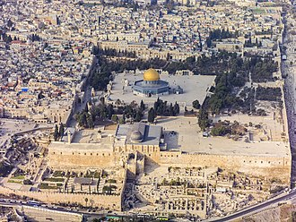

Al Aqsa Mosque and Dome of the Rock are two separate things that most people mix up. Today, we are coming up with a blog that clarifies the difference between these two places.
There are lots of confusions between lots of things, places and many more. And the confusion between Masjid Al-Aqsa and Dome of the Rock is one of them. Most of the people said both are the same places because they are located in the same city but we should know that Islamic history is different for both.
↠ press these buttons to see the difference ↞
So, here we are going to explain the history of both to let you know that both have different places and history.
Al Aqsa Mosque is also known as Bait-ul-Muqaddas. This mosque is located in Jerusalem the old city. It was the first Qibla of Muslims before Mecca. It is the holiest place for Muslims as well as for people of another religion. It was built by Suleman. The Al Aqsa Mosque is located on the Temple Mount, referred to by Muslims today as the “Haram al-Sharif with silver doom and four Minarets. Our prophet (PBUH) visit Miraj from this mosque.
The Doom of Rock also known as Qubbat as-Sakhra. Is an Islamic shrine located on Temple Mount in the Old City of Jerusalem? The Dome of the Rock was built by the caliph ‘Abd al-Malik ibn Marwaan in 72 AH. However, both these buildings are within the enclosure of Haraam as-Shareef (The Noble Sanctuary), referred to as “the Furthest Mosque” in Sura’ al-Israa’, verse 1. Mujir ad-Din al-Hanbali, in his book Al-Uns Al-Jaleel, writes that:
So, the whole plateau is called Aqsa that’s why people can’t distinguish between both of them. Both are different buildings of different structures. And both are in Haram Sharif.
Pre-construction site
The mosque is located on the Temple Mount, referred to by Muslims today as the "Haram al-Sharif" ("Noble Sanctuary"), an enclosure expanded by King Herod the Great beginning in 20 BCE.
The mosque resides on an artificial platform that is supported by arches constructed by Herod's engineers to overcome the difficult topographic conditions resulting from the southward expansion of the enclosure into the Tyropoeon and Kidron valleys. At the time of the Second Temple, the present site of the mosque was occupied by the Royal Stoa, a basilica running the southern wall of the enclosure. The Royal Stoa was destroyed along with the Temple during the sacking of Jerusalem by the Romans in 70 CE.
It was once thought that Emperor Justinian's "Nea Ekklesia of the Theotokos", lit. the New Church of the God-Bearer and commonly known as the Nea Church, dedicated to the God-bearing Virgin Mary, consecrated in 543, was situated where al-Aqsa Mosque was later constructed. However, remains identified as those of the Nea Church were uncovered in the south part of the Jewish Quarter in 1973.
Analysis of the wooden beams and panels removed from the mosque during renovations in the 1930s shows they are made from Lebanese cedar and cypress. Radiocarbon dating gave a large range of ages, some as old as 9th century BCE, showing that some of the wood had previously been used in older buildings. However, reexamination of the same beams in the 2010s gave dates in the Byzantine period.
During his excavations in the 1930s, Robert Hamilton uncovered portions of a multicolor mosaic floor with geometric patterns, but didn't publish them. The date of the mosaic is disputed: Zachi Dvira considers that they are from the pre-Islamic Byzantine period, while Baruch, Reich and Sandhaus favor a much later Umayyad origin on account of their similarity to a mosaic from an Umayyad palace excavated adjacent to the Temple Mount's southern wall.
| date | event |
|---|---|
| 1917-1948 | فتره الاحتلال البريطانى |
| 1967-1948 | فتره تقسيم القدس |
| 1967 | الاحتلال الاسرائيلى الكامل للمدينه |
| 21/8/1969 | احرق اليهودى الحاقد مايكل دنيس روهان المسجد الاقصى المبارك الشريف |
-Temple_Mount-Dome_of_the_Rock_(SE_exposure).jpg )